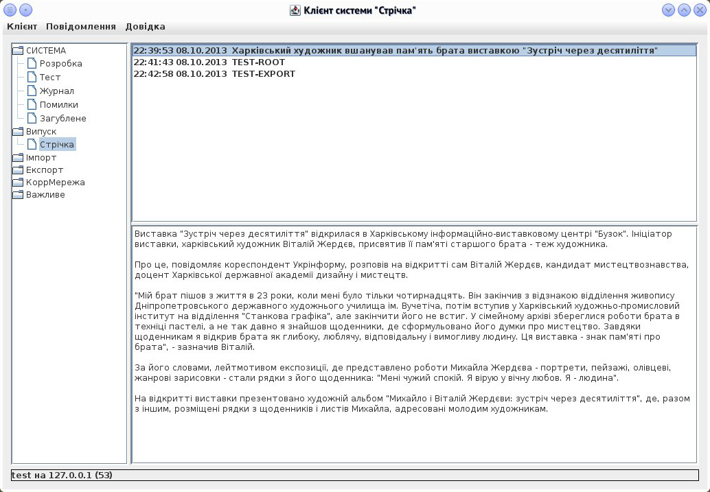

Інтерфейс програми
Інтерфейс програми
Загальний опис:
Програма-клієнт для роботи з системою стрічка. Реалізовує клієнтську частину протоколу системи. Дозволяю додавати нові повідомлення; редагувати, перевипускати і видаляти існуючи повідомлення. Має можливість редагування авторських прав: змінення прав на поточного користувача чи вибір з бази.
Список залежностей:
- libRibbonApp - бібліотека ядра програми;
- libRibbonData - бібліотека структур даних;
Ця програма не зберігає налаштувань.